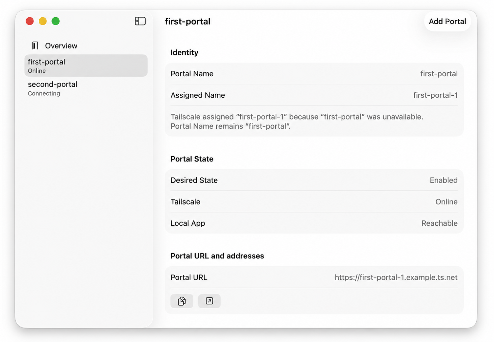
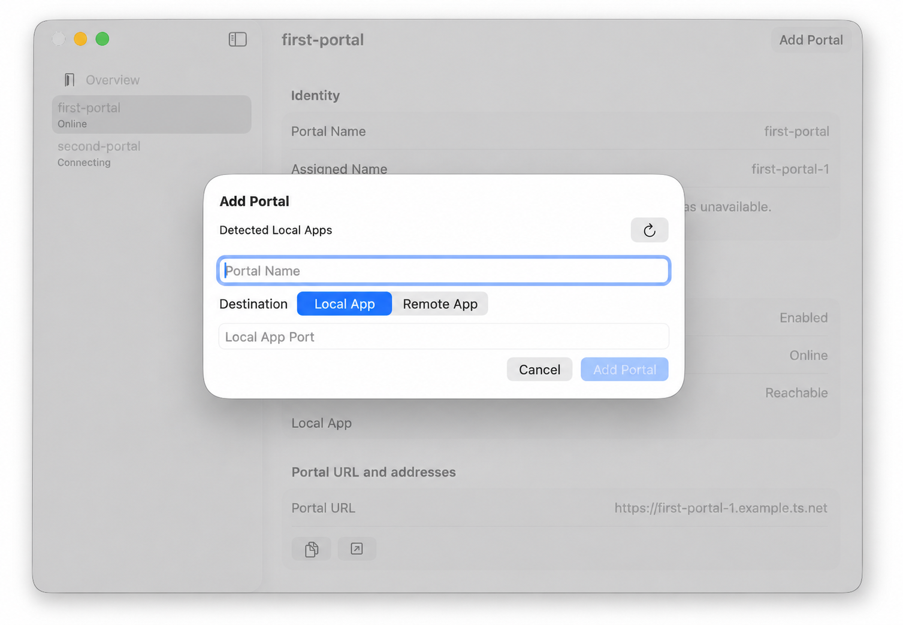
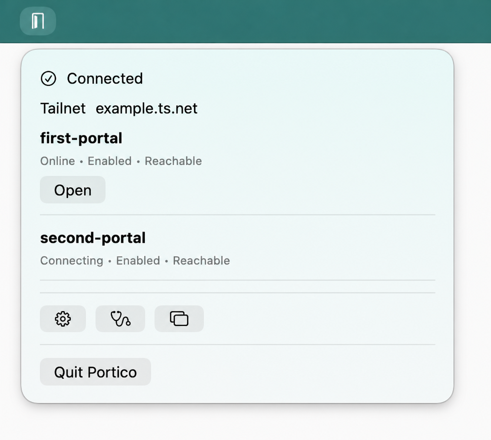

Durable private addresses
A Portal keeps its identity until you remove it, even when you change its destination.
Private HTTPS for Mac apps
Portico is a native macOS menu-bar app that gives services reachable from the Mac stable, private HTTPS addresses on a Tailscale tailnet.

127.0.0.1:8787https://first-portal-1.<tailnet>.ts.netPortal Name is requested. Assigned Name may differ, and the URL follows Assigned Name.
A route you can see
Portico keeps the setup focused on the connection that matters, without turning your Mac into a shared proxy.
Select a Local App, or enter a Remote App your Mac can already reach.
Name the Portal and authenticate its independent Tailscale node in your browser.
Share the stable HTTPS Portal URL with devices on your tailnet.
Portico makes the destination, Portal identity, connection state, and private URL easy to check at a glance.


Portico is deliberately small. It gives each route a durable identity and shows the state that helps you operate it.
A Portal keeps its identity until you remove it, even when you change its destination.
Each Portal joins the tailnet separately instead of renaming or proxying through your Mac's existing node.
See desired state, Tailscale connection, and destination reachability as separate facts.
A Portal is an independent Tailscale node. That boundary keeps its private address durable and its destination configurable.
Preview instructions
Portico is still being prepared for release. Follow the project on GitHub for development progress and future installation guidance.